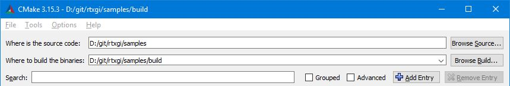
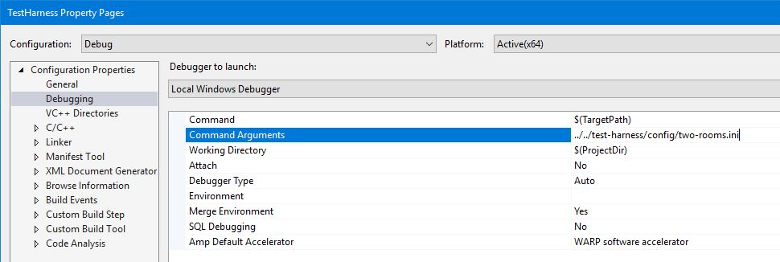

Quick Start¶
This fastest way to start learning RTXGI is to build and run the Test Harness sample application that is provided with the SDK distribution. To do this, you’ll first need to meet the following software and hardware requirements:
Software:Windows 10 v1809 or higher
Visual Studio 2017 or 2019
Windows SDK version 10.0.17763 or higher (can be installed using the Visual Studio Installer)
CMake 3.14.5 or higher, download here.
The latest drivers for your GPU. NVIDIA drivers are available here.
Any DXR enabled GPU. NVIDIA DXR enabled GPUs:
RTX 3090, 3080, 3070
RTX 2080 Ti, 2080 SUPER, 2080, 2070 SUPER, 2070, 2060 SUPER, 2060
GTX 1660 Ti, 1660 SUPER, 1660
GTX 1080 Ti, 1080, 1070, 1060 with at least 6GB of memory
Generating Projects with CMake¶
After downloading the SDK package, you will need to generate the appropriate Visual Studio project using CMake to build and run the code.
Test Harness Sample Application and SDK:
Open CMake
On the source code line, fill in the path to the SDK package plus /samples
On the build binaries line, use the path on the source code line plus /build

Select Configure
If using VS2017, you must select x64 as the platform for the generator in the dropdown
If using VS2019, the platform is x64 by default
Select Generate
The generated Visual Studio project will be found at samples/build/RTXGISamples.sln
SDK Only:
If you want to build only the RTXGI SDK, and aren’t interested in samples, follow these steps:
Open CMake
On the source code line, fill in the path to the SDK package plus /rtxgi-sdk
On the build binaries line, use the path on the source code line plus /build
Select Configure
If using VS2017, you must select x64 as the platform for generator in the dropdown
If using VS2019, the platform is x64 by default

Select Generate
The generated Visual Studio project will be found at rtxgi-sdk/build/RTXGI.sln
Running the Test Harness¶
To run the Test Harness sample application, open the generated RTXGISamples.sln Visual Studio solution file. The application requires an initialization file be passed as the first argument on the command line. CMake adds this command line argument automatically to the Debug Solution Configuration (shown below).

Change the Solution Configuration to Debug and run the application.
Note
To learn more about the sample application, head over to the Test Harness page.